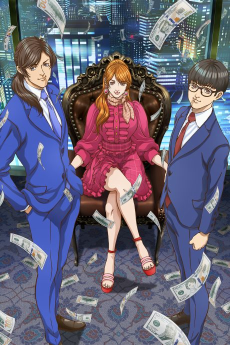
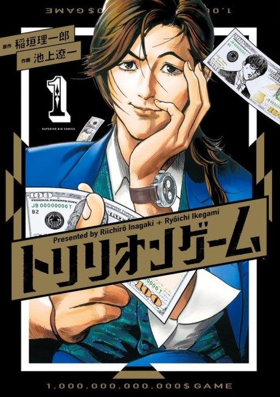

Anime
MangaTRILLION GAME
トリリオンゲーム
After the anime, read the manga from Chapter 52.
7.2AniList
—Animeter
26 epEpisodes
Anime finished. Where does the manga pick up?
Start at Chapter52
The anime ends where chapter 52 (volume 7) begins, so start at chapter 52; the manga is complete at 87 chapters. The finale adds an original flash-forward and the anime skips chapter 35 and condenses chapters 24-25.
15187 end
Season 1Start reading here